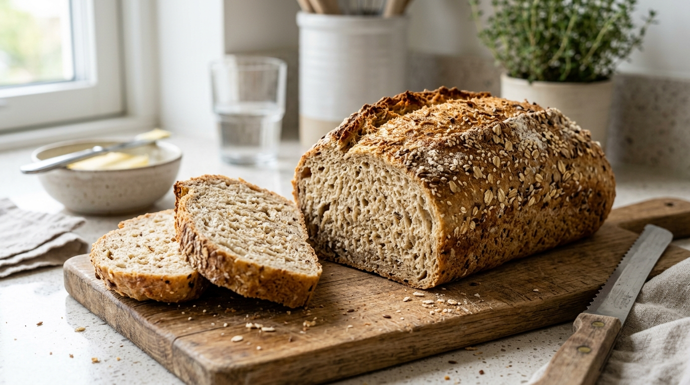

Ароматный цельнозерновой хлеб с хрустящей корочкой на овсяных отрубях и мягком твороге 0.1%. Доступно 2 выверенные вариации: классический плотный ржаной стиль и пышный пористый мякиш на псиллиуме.

В глубокой миске взбейте вилкой или венчиком 2 яйца С0 с 1 ч. л. соли до появления легкой пенки. Добавьте 250 г творога «Савушкин» 0.1% и 1 ч. л. яблочного уксуса. Тщательно перемешайте до гладкой кремовой массы.
Всыпьте 100 г овсяных отрубей, 30 г кукурузного крахмала, 5 г псиллиума, 1 ч. л. с горкой разрыхлителя и хлебные специи (кориандр или тмин). Замесите лопаткой мягкое тесто.
Оставьте тесто при комнатной температуре на 5–7 минут. Псиллиум свяжет свободную сыворотку, а уксус активирует разрыхлитель — в тесте образуется губчатая микропористая структура.
Выложите тесто в форму или сформируйте батончик на пергаменте, присыпьте семенами кунжута. За счет воздушных пор хлеб пропекается быстрее: выпекайте при 165°C в течение 30–35 минут. Шпажка из центра должна выходить сухой.
Переложите буханку на решетку и дайте полностью остыть 25–30 минут перед нарезкой. Мякиш стабилизируется и станет пружинящим, мягким и не прессованным!
Яблочный уксус создает активную кислую среду, стимулируя выделение $CO_2$. Запах уксуса полностью исчезает при выпечке, оставляя пористый мякиш.
Псиллиум удерживает пузырьки газа и влагу, заменяя клейковину белой муки. Хлеб пружинит при нажатии и не спрессовывается.
Благодаря двум яйцам и творогу буханка дает 59 г белка при 18 г сложных углеводов. Идеально для завтраков и спортивного рациона.